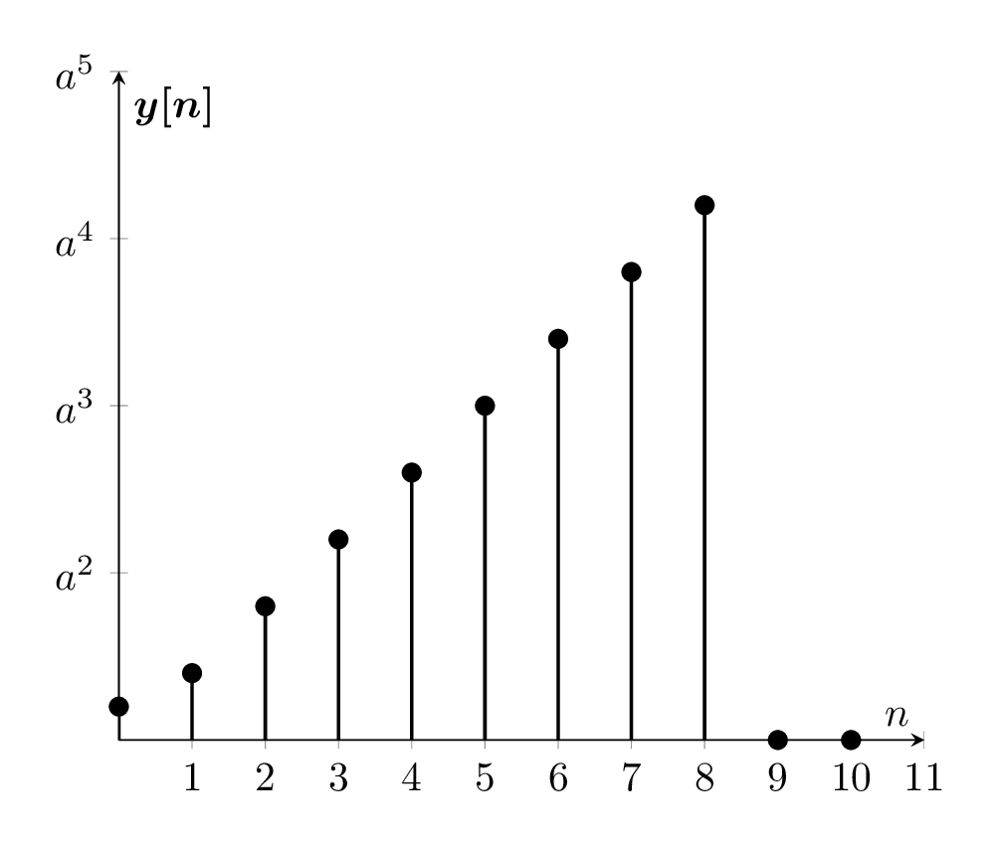

\documentclass[border={10pt}]{standalone}
\usepackage{tikz,pgfplots,filecontents,amsmath}
\pgfplotsset{compat=1.5}
\begin{filecontents}{data.dat}
n yn
0 1
1 2
2 4
3 6
4 8
5 10
6 12
7 14
8 16
9 0
10 0
\end{filecontents}
\begin{document}
\begin{tikzpicture}
\begin{axis}
[%%%%%%%%%%%%%%%%%%%%%%%%%%%%%%%%%%%
axis x line=middle,
axis y line=middle,
every axis x label={at={(current axis.right of origin)},anchor=north west},
every axis y label={at={(current axis.above origin)},anchor= north west},
every axis plot post/.style={mark options={fill=black}},
xlabel={$n$},
ylabel={$\boldsymbol{y[n]}$},
xtick={0,1, ..., 11},
xmax=11,
yticklabels={
$a^0$,
$a^1$,
$a^2$,
$a^3$,
$a^4$,
$a^5$,
$a^6$,
$a^7$,
$a^8$,
$a^9$,
$a^10$
},
ymin=0,
ymax=20,
]%%%%%%%%%%%%%%%%%%%%%%%%%%%%%%%%%%%
\addplot+[ycomb,black,thick] table [x={n}, y={yn}] {data.dat};
\end{axis}
\end{tikzpicture}
\end{document}Created by David Li